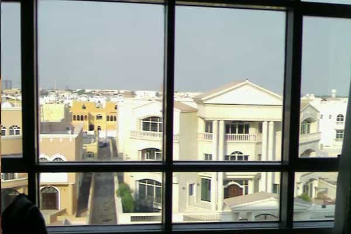
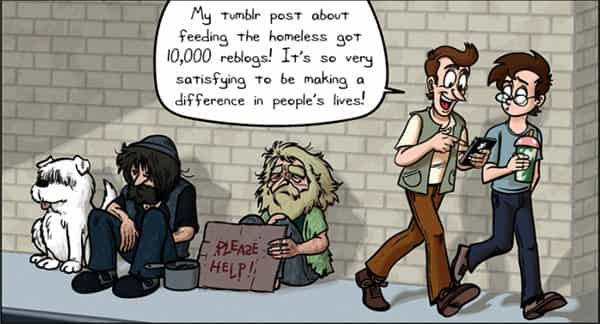

André is a young European who left his decaying country in 2012 for greener pastures. He enjoys exploring subterranean places, reading about a host of interconnected topics, and yearns for Tradition.


Remember the 90’s media icon Mother Teresa? I was young when she still enjoyed a wide media coverage, and still I can remember a shrewd saying on her career: “She liked the poor so much she wanted them to multiply.” The motto encapsulates something important about high-status caretakers. Namely, they have to justify their social existence and status with the need to take care of some “inferiors.” Were there no poor, they would be in dire need of a new fashionable cause to virtue-signal about.
Urban liberals are just like that. They love championing “the poor” or “the oppressed”—abstract people defined by their purported position in society, not by what they are. As we say in France, their heart leans Left and their wallet leans Right, which is an euphemistic way to notice the gap between their claimed values and their actual ruthless behaviour. Indeed, behind the false positivity of their self-promoting communication, urban liberals screwed the working and most middle classes, used the “poor” and “oppressed” as a pretext to expand a Big Brother governance network, and yell at billionaire Trump but not at billionaire Soros or at the Rothschilds.
When I was younger, I had the opportunity to go to the United Arab Emirates (UAE) as an exchange student. My alma mater passed a contract with the petro-monarchy, committing to create a French-speaking ancillary university there in exchange for big bucks. As I would soon discover, the attached college was to become a prized source of well-paid employments, Western teachers going there to give easier courses for higher wages.
On the material plane, I wanted for nothing, most of my expenses being covered by a scholarship agreement. The Emirati have lots of money, and they spend it lavishly on, for example, well-maintained green lawns or cypress edges in a full desert climate. Nearly all luxury companies have a retail counter there. The result is a shopping center culture, where all you have to do is stroll around neat malls with wealthy Arabs. On the bright side, the UAE are void of crime and insecurity: you can let your phone on a restaurant table, go to the bathroom, and when you come back the phone is still there. On the other side, alcohol is hard to find, the majority age of 21 is strictly enforced, and don’t even think about dating one of these Burberry silk veil-sporting girls.
The UAE are mostly an artificial country. Emirates were petty Bedouin fiefs before Anglo-American foreign diplomacy convinced them to sign an agreement, along with the powerful Saudi neighbour. When the first petrodollars started pouring in, the newly created “nation” looked like what happens when you play Sim City with cheat codes enabled: highways, six-ways avenues, skyscrapers and expensive desalination systems mushroomed out of the desert. Today, bathing on Abu Dhabi beaches still gives a front view of oil rigs, reminding the source of this seemingly fantastic, almost unlimited wealth.
Abu Dhabi in the 1950s and in 2000
Beyond its cultural want, the UAE have not only a shallow but a dark side as well. Does money build skyscrapers? Granted, money funds them, but even Bill Gates would fail to plant even one steel beam with his own hands. Actually, the brand new ultramodern Emirati metropolis have been built by millions of near-slaves for decades.
Although I did barely mingle with them, I quickly noticed their ubiquitous presence. On the supermarket, most if not all cashiers were Philippine women. On campus and office buildings, janitors were from Pakistan, Kazakhstan and other countries of the same zone. That is, poor, non-oil blessed countries. Most were Muslims, and in spite of them supposingly sharing the Emirati’s religion, they were doing all the jobs no Emirati wanted to do, worked a lot, earned almost nothing and lived in corrugated iron shacks far from the city centers. In the supermarkets, they would buy big rice packages, a bucket of oil, and nothing else.
Behind the college residence I lived in was a strip of desert some affluent people appropriated. Divided in plots, the strip already sported some nice villas, including one that featured a hedgerow of potted trees—imagine how much clean water has to be spent daily for maintaining green plants completely out of place in the desert. Unfinished villas were cared of by dozens of Paki hands: at night, the works continued, and heavy spots would shed lights on rapidly moving silhouettes.

Westerners who live in the UAE know about who gets their hands dirty. However, they pretend not to notice, simply letting the topic out of public conversations. It must be said that most upper class employments there are very well paid, and many Westerners are financially more than happy to eat at the Emirati plate. Even in our countries, lots of people and goods have been bought by petrodollars: first-rate football clubs, massive amounts of US farm land, many London Victorian houses, or the New York Chrystler Building are now owned by Gulf investment funds.
Former French prime minister Manuel Valls, a notorious sellout to both Jews and Gulf Arabs, openly rejoiced about 10 billion euros worth contracts with Saudi Arabia, hinting that this was inevitable to “save [French] economy and employments.” After the Charlie Hebdo attacks, the same man told us to “get accustomed to living with terrorism”, as if Muslims brutally murdering European civilians were a normal and somehow unavoidable phenomena. Of course, one should not get accustomed to the “far right”: the Left uses psychological conditioning to push emotional buttons as it wants, and here, we can notice how a prime seller to Gulf Arabians is also one of the terrorists’ best friends. Better white genocide and selling the country than recovering sovereignty with Marine Le Pen!
As I wondered how hypocritical the urban liberals could be—slave work is acceptable in the UAE, but Europe invaders should be granted free healthcare and welfare, just because—I started seeking for someone who would mention the dark side of Emirati “vibrant” cities, and found a series of articles on the left-leaning Guardian. This media outlet is at the heart of the system. A den of smug “social liberals”, the Guardian has an intimate relationship with the infamous George Soros and is notorious for having allowed rabid feminist Jessica Valenti to show her madness off . Still, they are almost the only mainstream media to mention the topic.
Are they powerful enough to stick their tongues at the nouveaux riches and their innumerable puppets? Well, not exactly.

On the surface, the outlet denounces the sheer exploitation and terrible working conditions of UAE imported blue collars. On a deeper level, the outlet’s point of view is limited and panders to very specific interests.
First, all pieces heavily borrow from NGO reports and praise said organizations, at such a degree that it looks like the poor workers’ conditions are a sheer pretext for urban liberal self-promotion. The fact that only some NGOs and some mainstream outlets mention the topic suggests a common agreement: poverty is but a market for professional bleeding hearts. This NGO can cover the UAE near-slaves, this other NGO can cover, say, “undocumented immigrants”, and so on, just as two companies would be allowed this and that part of the market.
Pieces authors themselves belong to the NGO they quote. The Guardian and NGOs are linked by revolving doors: all are actors of the same global governance and members of the same liberal establishment. Denunciating the poor working conditions of Paki or Kazakh workers is a sheer pretext to exist publicly and entertain a typically liberal self-satisfaction. NGO/NPO bureaucrats do not look for eliminating poverty—they are busy making a living and a show out of someone else’s poverty while getting good paychecks and a cozy job inside the System.
Second, what is exactly pointed out in the Guardian’s series? Life conditions, “exploitation”, small wages… but who is doing that? Either the outlet mentions these phenomena as if they happened on their own, with no perpetrator, or it mentions a singled-out custom, some employers, about whom it is immediately said that they are “a minority”, or unnamed enterprises.
The Guardian never denounces the Emirati managerial State, never mentions the typically Arab slavery culture and how the merciless Emirati exploitation maintains a trend that already existed centuries ago. It does not mention how near-slavery played an essential role, not only in some building sites or wealthy homes but in the whole construction of Dubai, Abu Dhabi or Riyadh. Of course, the outlet does not mention the vast passive complicity of these globalized Westerners who live in slave built air-conditioned skyscrapers.
Even when the Guardian mentions particular yards, it conveniently forgets to mention who exactly is running these. Are powerful liberals keeping by their sides stinky records to exert untold pressures—and if this is the case, on the behalf of whom exactly? Globalists’ business is definitely a Machiavellian playground.
Finally, absolutely nothing substantial is done to improve the condition of UAE near-slave workers. This would disturb Saudi and Emirati nationals, who are buddy-buddy with globalist sellouts, and cut at the root of the bleeding hearts’ means of subsistence. Everyone in the system is complicit with this. Even the pseudo-rebellious journalist will eat at the petro-monarchy plate and own a child-labour made iPhone. Speak a bit about poverty, enough for liberals to run structures that receive huge sums of money in the name of war on indigence, a bit more to mount an emotional attack on the average Westerner who does not participate into global governance network, and that’s it.
This unmentioned non-profit organization yielded huge profit for the matriarchs running it. Note the self-satisfied conclusion, completely oblivious to how most people do not benefit from such networks.
Neither the Guardian nor the self-claimed radicals actually do anything that could disturb Big Corp. For all their babble about these-poor-exploited-workers-out-there—which always fail to address the issue of crumbling Western middle classes and how whites are the first pushed aside—they never attack globalism, thus letting free rein to the very condition of the international cutthroat competition they pretend to denounce.
In all likelihood, most NGOs, NPOs, foundations, associations and other legal structures that keep working in synergy with each other objectively serve to:
Middle or average whites who venture to the colleges will be brainwashed into attacking their own race, their own class, and free entrepreneurship—but not Big Corp. If they say stay, they may get a low-paid career in fashionable media outlets or be used as cannon fodder in demonstrations whereas the privileged liberals will remain in their comfortable media-NPO-NGO-bureaucracy-BigCorp—revolving doors also open on private companies—networks. Trotskyists know well about this.
The only true opposition is the one persecuted by the establishment. Un-globalizing, dismantling both Big Corp and Big State, is the only way to free and save the drowning Westerners. This is exactly what Walmart, MacDonald’s and Wall Street do not want, and this is also why these love controlled opposition over the red pilled who are a real threat to their power.
Read Next: How The Deep State Operates